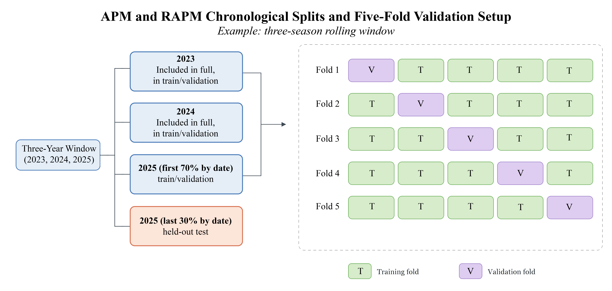
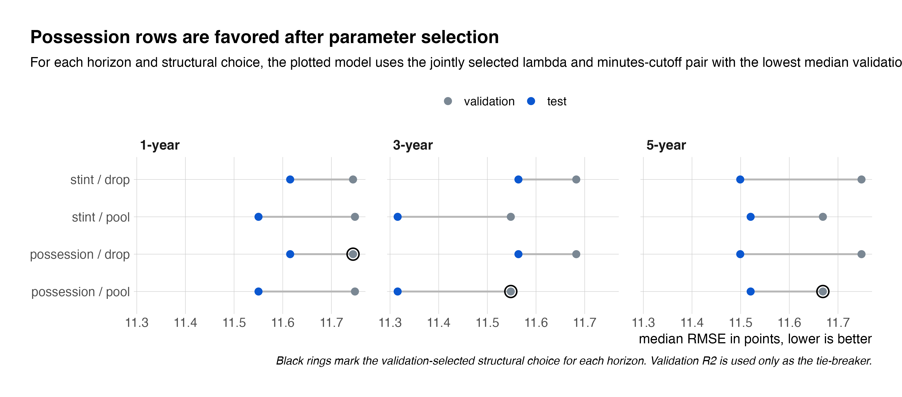
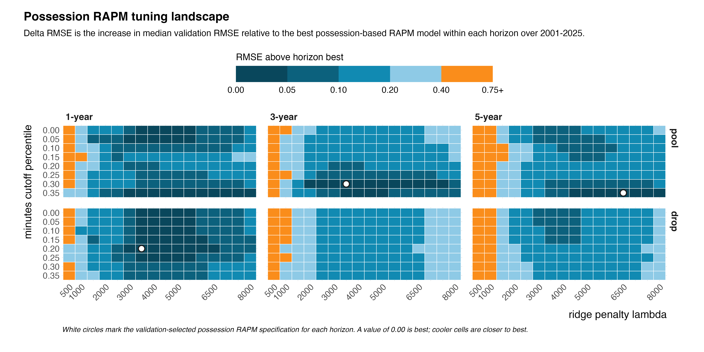
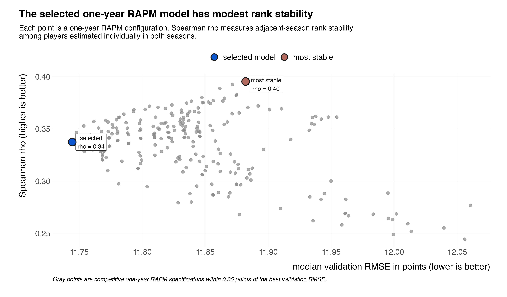

Adapting RAPM for the WNBA
Earlier this week, I published a high-level overview on SI.com detailing my research into adapting Regularized Adjusted Plus-Minus (RAPM) for the WNBA. This writeup serves as its technical companion. My goal is to contribute a rigorously validated WNBA RAPM framework, building on prior public WNBA plus-minus work and on Sill's validation standard. While his application of ridge regression remains the most enduring element of his work, Sill grounded his paper in a rigorous validation process that turned a metric (APM) from something that looked useful into something that can be tested. This project applies that same strict validation standard to the implementation details needed to modify RAPM for the WNBA. (Credit also goes to Jeremias Engelmann, whose guides inspired this work.)
The following sections lay out the exact methodology used to build and validate this model.
Methodology
Constructing the Design Matrix
Following Rosenbaum (2004) and Sill (2010), player impact is modeled with lineup-based observations1. In the possession design, each row corresponds to a single possession. In the stint design, consecutive possessions are collapsed and aggregated whenever the same ten players remain on the floor within the same quarter.
Both designs share the following mathematical notation. Let \(s\) denote the number of design rows and \(n\) denote the number of modeled players. For each row \(r\), let \(p_r\) be the number of possessions represented by that row and let \(m_r\) be the home team's scoring margin for that row. (In the possession design matrix, \(p_r\) always equals one.) The response variable is defined as \(y_r = 100 \times \frac{m_r}{p_r}\); this scaling transforms the response variable to points per 100 possessions.
The design matrix adopts the signed-player encoding as detailed by Rosenbaum and Sill. For modeled player j, xrj equals +1 if player j is on the floor for the home team in row r, −1 if player j is on the floor for the away team in row r, or 0 if player j is not on the floor in row r. An intercept column of ones is included to model home-court advantage. This process creates an \(X \in \mathbb{R}^{s \times (n+1)}\) design matrix containing one intercept and one signed indicator column for each modeled player.
| Stint | Intercept | Player 1 | Player 2 | Player 3 | ··· | Player N−2 | Player N−1 | Player N | Margin |
|---|---|---|---|---|---|---|---|---|---|
| 1 | +1 | +1 | +1 | +1 | ··· | −1 | −1 | −1 | +6.0 |
| 2 | +1 | 0 | 0 | +1 | ··· | −1 | 0 | 0 | +4.0 |
| ⋮ | ⋮ | ⋮ | ⋮ | ⋮ | ⋮ | ⋮ | ⋮ | ⋮ | ⋮ |
| s | +1 | 0 | +1 | 0 | ··· | 0 | −1 | 0 | −3.0 |
APM and RAPM Formulation
Adjusted plus-minus (APM): The baseline model is APM as described by Rosenbaum, which is fit using weighted least-squares regression. Each stint without substitutions (i.e., each row in the design matrix) is weighted by the number of possessions it contains, so longer stints contribute proportionally more information to the fit. (As detailed above, the weighting equals one for possession-based design matrices.) The APM estimator then solves:
$$\hat{\beta}_{APM} = \arg \min_{\beta \in \mathbb{R}^{n+1}} \sum_{r=1}^{s} p_r (y_r - x_r^T \beta)^2$$Here, \(\beta\) contains the home-court intercept and the player coefficients. Each player coefficient measures that player's estimated contribution to home-team point differential, conditional on the other players on the floor.
Regularized adjusted plus-minus (RAPM): As formulated by Sill (2010), RAPM adds an \(L_2\) penalty to shrink player coefficients toward zero and reduce overfitting:
$$\hat{\beta}_{RAPM} = \arg \min_{\beta \in \mathbb{R}^{n+1}} \left\{ \sum_{r=1}^{s} p_r \left( y_r - x_r^\top \beta \right)^2 + \lambda \sum_{j=1}^{n} \beta_j^2 \right\}$$The ridge penalty is applied to player effects but not to the intercept.
Model Implementation Choices
"Another challenge regarding APM surrounds various implementation details where choices have to be made," Sill wrote. "Apparently somewhat arbitrarily." Rather than leaving those choices implicit, this work, in line with Sill, treats the implementation details as parameters to be selected by validation. Those implementation details are as follows:
Stint-based vs. possession-based design matrices. The stint-based row construction follows Rosenbaum and Sill, where each row in the design matrix represents a period where the exact same 10 players share the court. The possession-based row construction increases the number of rows in the design matrix by codifying each observation as a single possession, rather than a series of possessions. In both cases, the response remains the home-team scoring margin per 100 possessions.
Dropped vs. pooled reference players. In the dropped specification, players who fall below a minimum playing time threshold are dropped from the design matrix altogether. This is the specification used by both Rosenbaum and Sill. In the pooled specification, all players who fall below a minimum playing time threshold share a single pooled coefficient. In effect, the dropped specification omits separate indicator columns for players below the minutes threshold, whereas the pooled specification replaces those omitted columns with a single shared indicator column that records the net number of players below the threshold on the home and away teams for each row.
The minimum playing time threshold is determined from the training data as a percentile of player minutes. The specific percentile used (0.00, 0.05, 0.10, 0.15, 0.20, 0.25, 0.30, or 0.35) is also treated as a model parameter.
Single season vs. multiple seasons. Models fit on a single season of data are compared with models fit on multi-season windows. The estimation windows considered are one, three, and five seasons.
Regularization strength. For RAPM, the ridge penalty parameter \(\lambda\) controls the amount of shrinkage applied to player coefficients. Larger values of \(\lambda\) shrink coefficients more aggressively toward zero and may produce more stable estimates. \(\lambda\) values of 500, 1000, 1500, 2000, 2500, 3000, 3500, 4000, 4500, 5000, 5500, 6000, 6500, 7000, 7500, and 8000 were tried.
For each individual season or multi-year estimation window, 544 unique model configurations were tested. Across all single-season, three-season, and five-season evaluations, this produced 44,064 total model fits.
Evaluation
Although the models are fit on possession- or stint-level rows, predictive performance is evaluated at the game level. Row-level predictions are aggregated within each game to obtain a predicted final home-team scoring margin, which is then compared with the actual final margin.
Chronological Splits
All train-test splits preserve chronology. Following the general approach laid out by Sill, games within each evaluation season are ordered by date, with the first 70% used for training and validation and the final 30% reserved as a held-out test set. (The evaluation season is the season for which predictive performance is measured.)
In the single-season setting, this split is applied separately to each season from 1997 through 2025. In the multi-season setting, the same split is applied within rolling three-season and five-season windows. Earlier seasons in the window are included in the training and validation pool in full, while the final season in the window serves as the evaluation season and is split chronologically into a training and validation segment with the first 70% of the data and a testing segment with the last 30% of the data.
Five-Fold Cross-Validation and Hyperparameter Tuning
Within each training and validation block, model selection is performed using pooled five-fold cross-validation. The available games are divided into five folds at the game level. For each fold, the model is fit on the other four folds and then used to predict the held-out fold. The held-out predictions from all five folds are then combined into one pooled validation set, on which overall validation RMSE and validation \(R^2\) are computed. Both choices (five folds and pooled validation) are WNBA-specific adaptations: because the WNBA provides a smaller game sample than the NBA, five-fold cross-validation leaves more data in each training fold and pooling out-of-fold predictions provides a more stable validation estimate less sensitive to outlier seasons.
Hyperparameters are selected primarily by minimizing median validation RMSE, with median validation \(R^2\) used as a secondary criterion when competing specifications that perform similarly. Similar to the note above, the median is used because it is less sensitive than the mean to unusually noisy seasons and may provide a more stable summary of typical out-of-sample performance.
The tuned hyperparameters are the row construction (stint or possession), the reference-player treatment (drop or pool), the minutes-cutoff percentile (0.00, 0.05, 0.10, 0.15, 0.20, 0.25, 0.30, and 0.35), and, for RAPM, the ridge penalty parameter \(\lambda\) (500, 1000, 1500, 2000, 2500, 3000, 3500, 4000, 4500, 5000, 5500, 6000, 6500, 7000, 7500, 8000).
After validation, performance is computed for all candidate specifications within a season or rolling window, the selected model is refit on the full training-and-validation block and then evaluated once on the held-out test set.

Results
Predictive Performance Across Time Windows
When holding time window, row construction, reference-player handling, and minutes cutoff fixed, RAPM produced lower median test RMSE than the same APM specification in 100% of comparisons. RAPM also reduced median test RMSE by 2.78, 1.27, and 0.88 points in the one-year, three-year, and five-year settings, respectively. These results coincide with Sill's finding that ridge regularization improves out-of-sample game margin prediction and show that RAPM outperforms APM in the WNBA setting. With that being the case, the remainder of the results focus on differences among RAPM specifications.
For each window, the selected RAPM specification detailed in Table 2 is the configuration with the lowest median validation RMSE, using validation \(R^2\) as a secondary criterion. As shown below, the three-year specification performed best overall.
| Horizon | Design | Reference | Minutes cutoff | Lambda | Val RMSE | Val \(R^2\) | Test RMSE | Test \(R^2\) |
|---|---|---|---|---|---|---|---|---|
| 1-year | possession | drop | 0.20 | 3500 | 11.7 | 0.142 | 11.62 | 0.164 |
| 3-year | possession | pool | 0.30 | 3500 | 11.5 | 0.159 | 11.32 | 0.195 |
| 5-year | possession | pool | 0.35 | 6500 | 11.7 | 0.145 | 11.52 | 0.167 |
Following Sill (2010), the main baseline is a constant-margin predictor. For the final test set, it uses the mean home-team margin from the full training-and-validation block. The corresponding constant-margin baseline median test RMSEs were 13.19, 13.19, and 13.21 for the one-year, three-year, and five-year settings, respectively.
RAPM Specification Choices
The following analysis focuses on which RAPM specifications performed best, which centers on two sets of choices. First, the choices for structural specifications (possession vs. stint rows, dropped vs. pooled treatment of low-minute players) determine how the design matrix is built. Second, the choices for tuning parameters determine the amount of ridge shrinkage and the minimum playing-time threshold used to decide which players are estimated individually.
Structural Specification Choices
Figure 2 compares the main structural RAPM specifications after parameter selection. For each time window and structural choice, the lambda-minutes-cutoff pair is selected jointly by median validation RMSE. The figure is intended to show which structural specification performs best after each specification is allowed to use its own best lambda and minutes-cutoff pair. The black rings mark the structural choice with the lowest median validation RMSE within each time window.

While possession-based rows were selected in all three horizons, the validation and test RMSE values are close across possession- and stint-based specifications across several time windows. Therefore, this result shouldn't rule out stint-based design, as used by Rosenbaum (2004) and Sill (2010).
The shift from dropped to pooled low-minute players, though, is consistent with the role of multi-season pooling. In the one-year model, dropped and pooled specifications perform similarly once lambda and the minutes cutoff are selected. In the three- and five-year models, however, pooled specifications outperform dropped specifications. This suggests that once multiple seasons are combined, it becomes more valuable to retain the lineup information contributed by low-minute players through a shared pooled coefficient rather than omitting those players from the design matrix entirely.
Regularization and Minutes-Cutoff Selection
Figure 3 examines the two main tuning parameters for the possession-based RAPM models: the ridge penalty parameter \(\lambda\) and the minutes cutoff percentile. Each cell reports the increase in median validation RMSE relative to the best possession-based RAPM model within the same horizon. (A value of 0.00 is equivalent to the best observed validation RMSE for that horizon, while larger values indicate worse validation performance.)

The clearest pattern is that small lambda values, such as 500 and 1000, perform poorly. Across time windows and reference-player treatments, the left side of the heatmap is consistently associated with higher validation RMSE, indicating that weak regularization leaves the model more sensitive to noisy player-lineup combinations. As \(\lambda\) increases into roughly the 2500–6500 range, validation performance improves. Beyond that point, the heatmap becomes relatively flat, which suggests that a broad range of moderate-to-large penalty values may support near-best performance. In other words, the heatmap does not suggest that performance depends on one isolated tuning cell.
The selected minutes cutoff percentiles were 0.20, 0.30, and 0.35 for the one-year, three-year, and five-year possession RAPM models, respectively. (For reference, a 30th percentile minutes cutoff corresponds to a player who plays about 270 minutes in a training set, or about 11 minutes per training game.) These selected values imply that a playing-time threshold helps reduce noise from including players who do not often appear in lineups.
Year-to-Year Stability of Player Ratings
Year-to-year stability in the resulting player rankings (the sorted coefficient values) provides an additional check of whether the estimated coefficients capture player signal rather than season-specific noise. To assess this, adjacent-season Spearman rank correlations were computed for one-year player coefficients among players who were estimated individually in both seasons and were not assigned to the pooled reference group. Spearman correlation is appropriate here because the goal is to evaluate the stability of the ranking itself rather than the stability of the exact coefficient magnitudes.

For the selected one-year RAPM specification, the median adjacent-season Spearman correlation was approximately 0.34. This indicates weak-to-modest correlation in the resulting player rankings from one season to the next. In other words, the one-year RAPM estimates contain some meaningful year-to-year signal, but the rankings remain sensitive to noise, role changes, injuries, roster turnover, and the limited sample size of a single WNBA season.
Player Ratings
For reference, the player ratings from the best one- and three-year RAPM models are included below.
Parting Thoughts
RAPM remains constrained by the structure of basketball rotations. When players share most of their minutes with the same teammates or appear in the same substitution patterns, the model struggles to separate one player's effect from another's. That collinearity limits the interpretability of the player coefficients, but it is not the only limitation. The best performing one-year specification compares well to NBA benchmarks, yet its modest test \(R^2\) of 0.164 and median Spearman correlation of 0.34 show that RAPM leaves substantial signal on the table. In addition, game-level margin prediction (unadjusted for opponent strength or shooting luck) is only a proxy for player impact, and may not be the best target for this modeling setup.
For these reasons, the RAPM coefficients should be read as lineup-adjusted estimates and not definitive measures of player value. The standard errors and confidence intervals reinforce that caution. Still, RAPM may identify players whose teams consistently won their minutes in ways that are not fully captured by the box score.
This version of RAPM is a starting point. Better WNBA impact metrics will likely combine lineup data with priors, box score production, offensive and defensive splits, and other techniques. (Max Carlin's wRAPM at Help the Helper separates offensive and defensive splits and uses priors. NBA BPM and RAPM metrics are legion. See: EPM by Dunks and Threes, xRAPM by Engelmann, DARKO by Kostya Medvedovsky, to name a few.) The next step is to adapt those ideas to the WNBA more fully. I hope to have more on that front soon.
— Dan